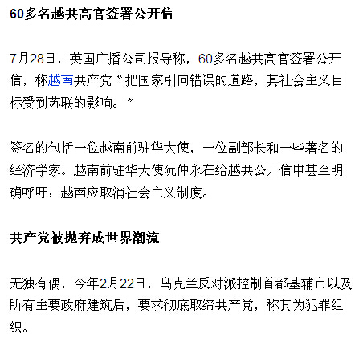
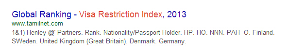

Conversation with 81184027 at Mon 25 Aug 2014 02:36:56 PM CST on 154115835 (webqq)
(02:37:06 PM) 光: 一年前在某中部省份讲学时目睹的一个场景，定格成了高教研究学者周光礼教授脑海中挥之不去的图画。
这是一所省属重点学校的校级职称评审，评委们要离校集中封闭评审，学校找了一辆车送，待评的人不约而同到校门口列队欢送，等评委上车时，一拥而上，给这些本是一个校园里的同事一一递上自己的名片，“请多关照，请多关照！”
随后，周光礼教授了解到，在该校，每年一次的职称评审，这样的“欢送仪式”已经俨然成为学校的一道景观。
这背后，青年教师职称评选的重重压力之下，一些学校的校园生态随之发生变化，并逐渐形成了一个巨大的利益寻租空间。顾不上好好授课、顾不上培养学生、顾不上潜心学术，为人师者终日围绕职称指挥棒转，“职称争夺战里，没有赢家”。
(02:37:51 PM) 光: 逼出来的“捷径”
东北地区一所高校管理学院的赵楠教授在学校工作了近40年，他常结合自身经历，为年轻教师“授业解惑”。
近几年，他发现一个现象，年轻讲师问的最多的问题不再是学术上遇到的瓶颈，而是如何才能最快评上副教授？
赵楠说，前些年也会遇到类似的问题。但最近几年，这个冠以“最快”字眼的问题却被问得更加频繁。
刚开始，赵楠总是劝诫年轻人“慢慢来”。谈得多了，赵楠有了新的发现。
在那些能够快速评上副教授的人身上，赵楠总结出一条规律，在职称评审的准备阶段，他们普遍“胆子很大”。
一个必经的环节是申报科研项目开展研究，再通过论文发表完成项目结项。
赵楠发现，在申报课题时，足够“胆大”的老师会将一份申报材料投向不同等级的项目，增加中标的几率。一旦申报上国家级课题，再将项目拆分成若干个小项目去申报省级以及更低级别的项目，这样就可以同时满足拥有国家级、省级不同课题的要求，“在整个过程中，他们要做的就是将项目书换个写法”。
在发表论文结项时，也存在“一文多结”，即通过一篇论文，挂上数个项目“阶段性成果”的名号，快速完成几个项目的结题。
赵楠说：“本是保证科研连续性的措施，现在越来越多异化为谋利的手段和学术不端行为，也耗尽了青年教师的心力。”
此前媒体一篇《论文基金标注莫玩一石三鸟》的文章可以佐证这一现象。
该文披露某论文发表时竟然标注了10个基金，国家自然科学基金、地震行业科研专项基金、国家“十一五”科技支撑项目子课题等都尽在其列。
科研项目、高水平论文、专利、获奖，这些晋级路上的敲门砖本该由讲师通过自身努力获得，但压力之下，“各种捷径随之产生”。
华中地区一所著名高校的刘飞老师介绍，在自己的学校职称评审时，SCI论文作者和通信作者（文章的联系人）均可认同为第一作者计分，因此催生了不少“同事间的友谊”，“互挂通信作者，这样一篇论文成就了两个人”。
而他的大学室友任教的一所二本学校里，还有着这样的怪事——同一个课题，不断变更负责人，前面的人评上职称后让给后面的人。
“今天的评价标准太急功近利，违反了人才自身的发展规律。”赵楠认为，评价的指挥棒指到哪里就打到哪里，指挥棒以数量论英雄，短期时间里，论文要几篇、项目金额要超过多少钱……青年教师就去向一个不断标准化、量化的指标靠拢，“顾不上好好授课、顾不上培养学生、顾不上潜心学术，为人师者终日围绕职称转，丢掉了对学术的尊重”。
在他看来，教师年轻的时候应该是积累的阶段，先厚积，才能薄发。然而现实的考量把十年磨一剑的人都毁了，十年磨一重剑，不如一年磨几把小刀，“按现在的标准，出不了陈景润”。
(02:38:52 PM) 光: 寻租空间巨大
“请准备3万到4万元，于今晚到新天宾馆2408房间找刘一兵教授，晚了就送不进去了。”2012年5月，一位新浪微博网友在其微博上贴出的一张手机短信截屏图，迅速引爆湖南部分高校教师职称评审“潜规则”——参审老师给评委送红包早已是惯例。
事实上，在职称评审涉及的所有环节，一条灰色利益链均隐现其间。
一位教授对于论文的产业化痛心疾首，“你去查一查，网上有多少卖论文的网站，国家级、省部级、核心、权威都明码标价”。
这位教授的朋友为了评职称，在一个核心刊物上发表了一篇文章，光版面费就花去了两万元，“这还是认识里头的人，不然还不给发”。
武汉大学原教师沈阳的团队进行了3年多专题研究后披露的一组数据让人震惊，评职称催生论文买卖市场火爆，“中国买卖论文已形成产业，2009年规模达10亿元”。
“攒书”也是一种形式。只要凑足3到5万元就可以出一本书，这就是著作，但这个著作实际的学术含金量没人关注，甚至大量充斥着文化垃圾。
一个广为流传的段子引人深思，一名编辑听培训课，某老编辑讲了编辑界内部的一个笑谈：“我是编辑我可耻，我给国家浪费纸。”
这位教授说，一个尴尬的现实是，只要同事不去举报，面对众多的申请者，学校也很难查出来，“没人管你论文是怎么发的，关键是发了没有，最终大家只‘笑贫’！”
申请课题也得“有关系”。
以国内某项评审为例，按程序，评审先要交材料，然后主管部门将材料寄给评议者，“这其实相当于知道评议者是谁了，有的老师就会比较积极地私下去活动”。
除了完成论文、课题、项目“硬指标”外，评职称还要找评委，因为评委有着绝对的权力，“你虽然合格，但评委可以认为你条件不够硬”。
东北一所重点高校的学工处长曹老师家的故事颇有戏剧性，一年前“少根弦”的经历让他后悔至今。
去年年中，同校教学岗位的爱人评副教授，认为她条件足够，曹老师就没有找评委，结果不仅没评上，还被几个熟悉的评委批评，“当领导瞧不起人，招呼都不打，还以为你们家不在乎呢！”
赵楠介绍，评选副教授一般由学院学术委员会负责组成评审组。经过院内答辩后，在学校层面进行再次评审，部属高校评审权已经下放，省属高校最后还需报送省级教育部门。为了保证公平，评委名单在评审前一天下午才会公布。
“评审前，他们就在猜测谁可能是评委。”赵楠表示，由此迅速展开的“活动对象”包括：学院领导，在院里有权威的教授，甚至涉及可能退休但还有影响力的教授，“因为他的学生可能是评委”。
赵楠教授透露，怎样感谢因人、因经济能力而异，“副教授评选花3到5万元是普遍的行情”。
他同时表示，送钱的风险太大，近几年这样的现象听说的少了，现在大家更看重平时的关系和日后的表现，是长期的利益捆绑，“比如逢年过节要表示一下，平时有项目都要想着人家，如果以后人家评院长需要选票时你要冲在前面拉票”。
武汉一所高校30岁的讲师刘强说，面对生活压力和学术道德的双重拷问，周围很多同事充满了纠结，“试想一下，如果周围的人都通过花钱找关系，只有你拒绝，自恃清高，只会受人鄙夷是你自己傻”。
他也理解一些人的选择，“从投资学的角度考虑，投入一年就回来了，还终身受益，这也是被逼无奈的选择”。
刘强坦承自己此前一直坚信一切要靠自己的努力，但也听说过无数最终“悔恨”失败的案例。
一年后，刘强也有资格评副教授了，他不知道自己能够坚持多久，“国家的未来靠我们，我们的未来靠谁呢？”（应受访者要求，赵楠、刘强为化名）
(02:39:23 PM) 光: 武汉一所高校30岁的讲师刘强说，面对生活压力和学术道德的双重拷问，周围很多同事充满了纠结，“试想一下，如果周围的人都通过花钱找关系，只有你拒绝，自恃清高，只会受人鄙夷是你自己傻”。
(02:39:31 PM) 光: 一年后，刘强也有资格评副教授了，他不知道自己能够坚持多久，“国家的未来靠我们，我们的未来靠谁呢？”（应受访者要求，赵楠、刘强为化名）
(02:39:40 PM) 光: http://mp.weixin.qq.com/s?__biz=MzA3NTU1MzgyOA==&mid=200684275&idx=1&sn=ae8b0e4d0068dc2beeb3f2d82787f832#rd
(02:40:35 PM) 光: 武汉大学原教师沈阳的团队进行了3年多专题研究后披露的一组数据让人震惊，评职称催生论文买卖市场火爆，“中国买卖论文已形成产业，2009年规模达10亿元”。
(02:53:08 PM) 光: 赵楠教授透露，怎样感谢因人、因经济能力而异，“副教授评选花3到5万元是普遍的行情”。
他同时表示，送钱的风险太大，近几年这样的现象听说的少了，现在大家更看重平时的关系和日后的表现，是长期的利益捆绑，“比如逢年过节要表示一下，平时有项目都要想着人家，如果以后人家评院长需要选票时你要冲在前面拉票”。
(02:54:03 PM) 光: 这样的学校怎么教育学生不贪腐呢
(03:00:44 PM) 此去经年: 嗯，社会风气不行
(02:57:36 PM) 光: 嗯
(03:01:21 PM) 福建-福州&水浒: :L
(03:03:34 PM) 福建-福州&水浒: 
(03:03:41 PM) 福建-福州&水浒: :o
(03:04:20 PM) 光: 嗯
(03:04:37 PM) 光: 共产主义闹剧估计差不多了
(03:08:18 PM) 福建-福州&水浒: 可能在中国还会很长远
(03:05:12 PM) 光: 国内是拜金主义
(03:05:21 PM) 光: 不是共产主义
(03:09:47 PM) 福建-福州&水浒: 没有信仰，一方面宪法说有宗教信仰自由，另一方面学校又是无神论教育
(03:10:08 PM) 福建-福州&水浒: 毕业以后就成了实用主义者了
(03:07:00 PM) 光: “中国买卖论文已形成产业，2009年规模达10亿元”。
(03:07:09 PM) 光: 没有信仰之后，钱就是信仰
(03:10:39 PM) 蛋包飯: 无神论教育是为了支持共产主义一党专政
(03:10:40 PM) 福建-福州&水浒: 在金钱与诱惑面前屈服现实
(03:10:45 PM) 福建-福州&水浒: 百姓不过啊
(03:11:14 PM) 福建-福州&水浒: 嗯
(03:08:04 PM) 光: 送钱的风险太大，近几年这样的现象听说的少了，现在大家更看重平时的关系和日后的表现，是长期的利益捆绑，
(03:11:35 PM) 福建-福州&水浒: :D
(03:08:37 PM) 光: 不相信共产主义的共产党
(03:11:57 PM) 福建-福州&水浒: 如果这股风又兴起
(03:12:20 PM) 福建-福州&水浒: 那还是很适用，简单
(03:09:14 PM) 光: 其实随便调查一下
(03:09:23 PM) 光: 就可以了解党员到底想什么
(03:10:09 PM) 光: 肯定不会是什么共产主义
(03:13:36 PM) 福建-福州&水浒: 加入共产党的心理佛教明白的很，稍微有点理智的人看党章规条都一目了然
(03:13:48 PM) 蛋包飯: 共产主义没人信啊，全能教有人信。
(03:14:10 PM) 福建-福州&水浒: 跟全能组织一个特性矛盾太多，不过只希望能保持饭碗
(03:15:06 PM) 福建-福州&水浒: 当然权利一大，就更迫切给自己找一个安全之地，移民就的需要金钱:moneybag:，贪腐就产生了
(03:16:43 PM) 福建-福州&水浒:
(03:17:43 PM) 蛋包飯: 党国高官移民之地：伯利兹、圣基茨尼维斯联邦（免税天堂）、塞浦路斯、纽西兰、瑞典、瓦努阿图。
(03:18:20 PM) 蛋包飯: 未与党国建立引渡法律。成为贪官移民之地。
(03:18:29 PM) 福建-福州&水浒: :撇嘴:
(03:19:02 PM) 蛋包飯: 瓦努阿图与台湾建交
(03:19:19 PM) 蛋包飯: 与台湾建交的国家也是党国高官移民之地首选
(03:21:25 PM) 蛋包飯: 中国大陆护照国际旅行自由度指数世界排名倒数第四。后面三位是：伊朗、巴基斯坦、阿富汗。
(03:22:22 PM) 小绵羊: 怎查询到的，权威吗?
(03:23:48 PM) 蛋包飯: 很权威。国际旅行自由度指数(VRI)排名第一的是丹麦、第二德国，第三英国、第四比利时、第五美国、第六日本。中国大陆是倒数第四。
(03:25:20 PM) 福建-福州&水浒: :L
(03:27:46 PM) 蛋包飯: 
(03:28:02 PM) 蛋包飯: 这个排名中国大陆非常丢脸，所以百度不到，要用google
(03:28:45 PM) 蛋包飯: 香港护照的排名是第12位
(03:34:12 PM) 小绵羊: 丹麦，我看过报导，真正的自行车皇国!允许携自行车乘公交，地铁，火车，有专用自行车道!骑自行车受人尊敬，开小车却不被看好!中国也曾号称自行车王国，实际刚相反!可悲!
(03:35:11 PM) 蛋包飯: 国际旅行自由度指数(VRI)也可以译为：签证限制度指数
(03:35:58 PM) 蛋包飯: Visa Restriction Index 这个指数表面该国的公民能否自由免签证出入境
(03:38:45 PM) 蛋包飯: 2013的国际旅行自由度指数排名香港位居第14位，中国大陆护照位居第82位（倒数第11）。
(03:40:48 PM) 小绵羊: 中共党的章程，说其代表了先进生产力的发展要求，代表了先进文化的发展方向，代表了广大人民群众的根本利益!现在我才明白:贪腐，一党专政专权，阉割文化，拜金主义等等就是先进生产力，先进文化，就是人民的利益!
(03:40:48 PM) 蛋包飯: 并列第一的是芬兰、瑞典、英国（73国免签证）
(03:42:36 PM) 蛋包飯: 丹麦、德国、美利坚护照免签证指数并列第二
(03:44:08 PM) 蛋包飯: 越南护照比大陆护照好用，东盟内免签证。
(03:44:52 PM) 小绵羊: 原来，党认为贪腐就是先进文化，敛财就是广大人民的要求，"通奸"就是人民的根本利益!
(03:49:40 PM) 蛋包飯: 香港的护照免签国超过140个，台湾护照免签国超过120个。另外，还有一个事实是，给予中国护照完全免签待遇的国家，基本上对全世界都是免签的。
(03:50:14 PM) 蛋包飯: 你在香港，我在深圳，只隔一座桥。你和我都是打工仔，你每月工资两万多港币，我每月两千多人民币，而你的物价比我们还便宜;你拿着香港护照，去140个国家免签证，我拿着中国护照连香港也进不去。
(03:51:32 PM) 小绵羊: 亦即，中国只是食残羹!
(03:55:08 PM) 小绵羊: 中秋都近了，天气还这么热，与经济，与中国有关吗?
(03:57:24 PM) 此去经年: 地铁里的人，大都没有情感，行色匆匆，地铁在都市极其繁华的大楼中间穿梭过。唯一能证明这些地铁乘客是活人的证据就是理想，而发达使人麻木。所以理想就不只是欲望那么简单了，它经常呈现出的状态就是“理性想想而已”。
(03:56:43 PM) 光: http://pan.baidu.com/s/1pJ6Z6bD
(03:57:10 PM) 光: [诸神字幕组][NHK纪录片][朝鲜 权力与金钱之谜][720P][中日双语字幕]
(04:00:49 PM) 小绵羊: 两夫妻都少沟通，整天对着手机，电视，电脑!大多的人的理想是:钱!
(04:07:28 PM) 蛋包飯: 1989年10月23日，中华人民共和国宣布中止与伯利兹外交关系。伯利兹与台湾当局“建交”:D:D:D
(04:22:49 PM) 小绵羊: 中国，野蛮之国，与之有分枝矛盾的国家，若与别国建交，或与中国仇视的国家建交，均不被中国看好!我不要的东西，别人休想得到，我把它毁掉，也不送给别人。野蛮，它不与A国好，还不允许别人与A国好呢!
(04:25:30 PM) 小绵羊: 与台湾建交的均被视为自动与大陆断交!还不让别人与台好呢!
(04:28:31 PM) 这一季的花开过后: 小绵羊是大灰狼。:D
(05:00:42 PM) 光: http://pan.baidu.com/s/1i3f12eD
(05:00:56 PM) 光: [诸神字幕组][NHK纪录片][香港国民教育][中日双语字幕][720P]
(05:04:35 PM) 蛋包飯: 免费观看吗，晚上来看看